Hi, I'm back. Thanks for all the positive comments on my previous article. I really wanted to write some more but I didn't really know what about. But a while ago some talking started on the forums about mapped spheres and this got me excited and in just a couple of hours I whipped up some example programs. Now all I needed to do was write an article.
This stuff is going to be a bit more advanced than last time, so if you feel uncomfortable with trigoniometry it might be useful to read my previous article in issue 5 again, because it covers all the basics. In fact, this article doesn't cover any new theory at all. All of the stuff that is covered in here is also covered in the first lesson, only we are going to put it together in a different way and do something different with it.
This time there are 6 tested, fully working code examples with this article. You can download them all here, together with a makefile. Simply unzip them and type "make", it should work.
So we want to do a mapped sphere. That's really simple. All we need to do is to go through each point of the screen and apply the mathematical formula p = arcsin (-y/r) and q = arcsin (x / (cos (p)*r)) to get the coordinates on the sphere. Of course I don't have to explain how this formula is derived. What is that, I do have to? Guess you didn't read my first article...
On second thought, I have to slow down a bit here. Let's start by talking about mapping. Not spherical mapping, but mapping in general. I can think of different kinds of mapping, like cylindrical mapping. Or mapping a texture to a three dimensional polygon. In all these cases we want to map a flat, rectangular bitmap to something which is not flat and rectangular. The reason to do this is that if something is flat and rectangular it is also a bit boring. To make it look cooler, we can bend and curve it until it is anything but flat and rectangular.
Some examples of games that use mapped spheres: Star control 2, xcom (the sphere is actually made up of polygons but the lighting effect is the same as described below). A mapped sphere would do well in any space simulation program. Mapped cylinders are a bit rarer: Mickey Mania makes clever use of it in the tower level and in the Moose pursuit level, and the intro scene of Donkey Kong Country 3 has one (you can tell I'm a nintendo fan, can you?)
What are we mapping with? We have a destination bitmap (the screen, the bitmap on which the sphere should go) and the source bitmap (the thing that should be mapped onto the sphere). If the source bitmap were a map of the earth, we would make a sphere that looks exactly like the earth seen from space. In between we have to do some transformation and there is where the sine and cosine come in to play.
Just as with mode 7 and with rotated sprites we have to start with the destination, not the source. We go through all pixels of the destination bitmap and try to figure out which pixel of the source bitmap should go there. This approach has two advantages: we won't skip any pixels, and we won't draw any double pixels.
But the difficult part is the figuring out part. What we need here is a basic formula that gives us the coordinates (p, q) on the source bitmap given the coordinates (x, y) on the destination bitmap. This formula however, is such a mysterious and complex beast that it takes a 65 page scientific article to write down even a simplified form. So that is completely outside of the coverage of this article. Oh no wait, I remember, I wrote it down a couple of paragraphs ago. Now I only have to explain how it is derived.
You know what, let's make it a bit simpler. Let's start with a cylinder instead of a sphere. A cylinder is round too, just a bit less round than a sphere and therefore also a bit simpler. You see, the more things look like a rectangle, the easier they are. A cylinder is halfway between a sphere and a rectangle.
Let's define coordinates. Take a look at fig 1. We are going to make a cylinder in the way we did it in kindergarten. We take a nice flat piece of paper (the source bitmap) and roll it up. We can stick the ends together with a bit of sticky tape. The bitmap wraps around so that the topright pixel of the source bitmap is right next to the topleft pixel. If the bitmap was 360 pixels wide the horizontal coordinate (p) would be the angle between a point, the 0 point and the axis of the cylinder. The coordinate q is symply the vertical position on the cylinder, 0 being the top.
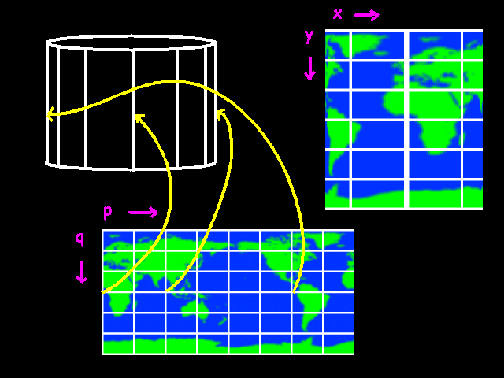
Suppose we wanted to go from source to destination (like normal people would do). We want to know for each position (p, q) on the cylinder where on the screen it should go. How would we do that? coordinate y is simple. It simply equals q. No problems there. x is more difficult. If the angle p is 0, the x coordinate should be the center of the cylinder plus the radius. If p is 90 degrees, the x coordinate should be in the center. If p is 180, it should be the center minus the radius. The function which does exactly that is: the cosine!
So:
x = center + radius * cos
(p)
y = q
We are still missing the z coordinate here. A cylinder is a three-dimensional object so we can also calculate the z coordinate for each point. The z axis is perpendicular to the screen. When we are going to display the cylinder, we just throw away the z axis. After all bitmaps are 2 dimensional so we don't need the third axis. Note that this is parallel projection, meaning that things don't get smaller if they are farther away. In other words there is no perspective.
I'll give the formula for the z coordinate anyways. It might come in usefull if we are going to do lighting and rotation and so on.
x = center + radius * cos (p)
y =
q
z = center + radius * sin (p)
You see, if we change p, x and z together describe a complete circle.
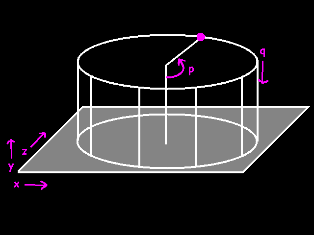
With these functions we can calculate the x, y and z of any point on the cylinder. But since we want to work from the destination out, we already know the x and the y! We have to turn these formula's around, like this:
q = y
cos (p) =
(center - x) / radius
We're a bit stuck with the formula for p. How to get rid of the cos(p)? There is a function which does the inverse of the cosine. This is called the arccosine. So our formula's become:
q = y
p = arccos ((center - x) / radius)
There you are! As you see we don't know the z coordinate, but we don't need to know it in order to calculate p and q.
All we need now is a code example.
/*
mapped_cylinder()
maps a bitmap onto a cylinder.
BITMAP
*target = bitmap to display
int
cx = horizontal position of the center of the cylinder
int top = position of the top of the
cylinder
int r = radius of the
cylinder
int h = height of the
cylinder
BITMAP *map = the
thing that is going to be mapped onto the cylinder
*/
void mapped_cylinder (BITMAP *target, int cx, int
top, int r, int h, BITMAP *map)
{
int
x, y; // coordinates on the target bitmap
int p, q; // coordinates on the
source bitmap
// for each line:
for (y = 0; y < h; y++)
{
//q is the
same throughout this line. we can calculate it already
//y has a
range from 0..h, and we have to change that into a
//range from
0..map->h
//so we use
this expression:
q = y * map-
>h / h;
// for each
pixel in the line:
for (x = -
r; x < r; x++)
{
fixed temp;
// a temporary variable we use for calculating p
// right
now, x is between -r and r.
// x must be
between 1 and -1 before we can use asin
// so
therefor we divide by r
temp =
itofix(x) / r;
// now we
can use the asin() function
temp =
fixasin (temp);
// the
result is an angle between -64 and
64.
// the next
expression changes that to angle between 0..64 and
192..255,
// which is
equivalent, because 192 == -64,
// but
postive integers are a bit easier to deal with
temp &=
0xFFFFFF;
// the
actual p has to cover the whole bitmap
// so we go
from 0..256 to 0..bmp->w
p = fixtoi
(temp) * (map->w-1) / 256;
// now we
know p and q. copy a pixel.
putpixel
(target, x + cx, top + y,
getpixel (map, p, q)
);
}
}
}
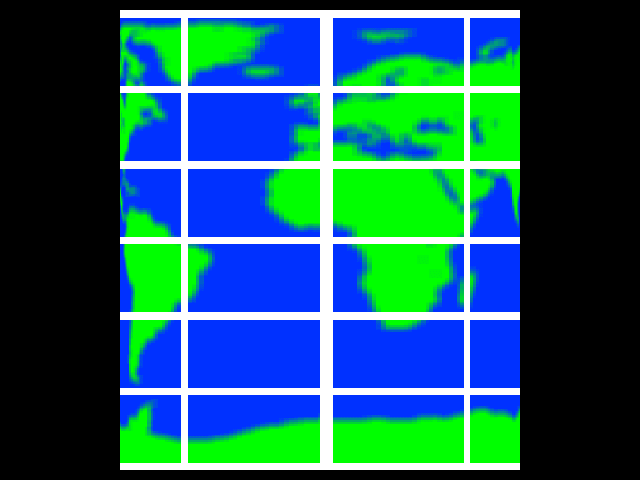
maybe this line:
q = y * map->h / h;
puzzles you. You see, I said before, q is equal to y (q = y). This is not exactly true if the target bitmap is not the same size as the source bitmap. Of course we have to take that into account.
A simple trick to do that is to look at the range of values that you have. We want y to cover the whole vertical range of the cylinder. So y ranges from 0 to h (h is the height of the cylinder). Also, we want q to cover the entire source bitmap. So q ranges from 0 to map->h (the height of the source bitmap). So:
y ->
0..h
q -> 0..map->h
Now the question is: we know y, how to calculate q?
if we divide y by h, y ranges from 0..1. This is useful because now we can multiply by map->h, and the range is from 0..map->h
float temp = y; // temp ranges from 0..h
float temp = temp / h; // temp now ranges from 0..1
q =
temp * map->h // q; ranges from 0..map->h
But if you are using ints, remember to do the multiplication before the division, because then we will have less problems with rounding errors. And note: this trick is also useful if you want to go from degrees to radians.
float degrees = 120; // degrees can
range from 0..360
float temp = degrees / 360; // temp
ranges from 0..1
float radians = temp * 2 * PI; //
radians ranges from 0..2 * PI
fixed allegro_degrees =
temp * 256; // allegro_degrees ranges from 0..256
Ok, now on to a sphere.
Again we'll use p and q to for the coordinates on our source bitmap. We are going to use the same coordinate system that is used for the ultimate sphere, the earth itself. q is the latitude. 0 at the equator, -90 degrees at the north pole and 90 degrees at the south pole. p is the longitude. 0 degrees in London, 150 degrees in Sydney and 220 degrees in Los Angeles. You see that the source bitmap will be a bit stretched at the top and the bottom. There is nothing to be done about that.
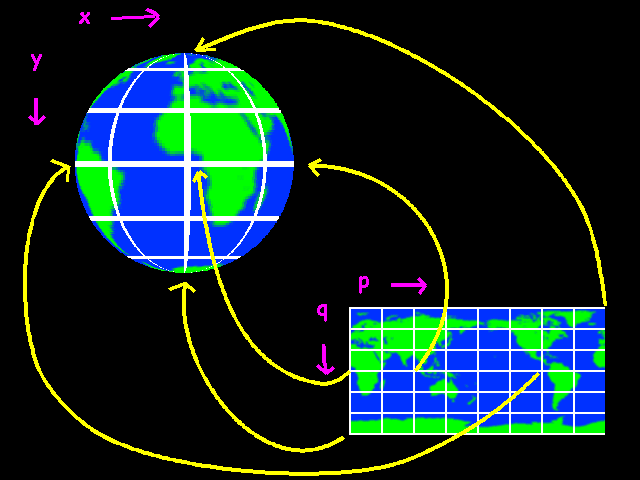
How do we go from x,y to p,q? Again we'll do it the sane way first and go from p,q to x, y. And let's not forget z this time. x and z kind of rotate with p again, so let's start from this:
x
= center + radius * cos (p)
y = q
z = center +
radius * sin (p)
Well, it's obviously not correct, because now we get a cylinder again. The y coordinate should also have some sine in it, because it reaches its maximum when q is 90, and when q is over 90 it should go back again.
x = center + radius
* cos (p)
y = center + radius * sin (q)
z = center
+ radius * sin (p)
Well this gives us some kind of 2-way cylinder. The problem is that the circles that x and z form are smaller and smaller if q goes to 90 or -90. Only if q is 0, x and z are just right. Actually we need to scale x and z down a bit.
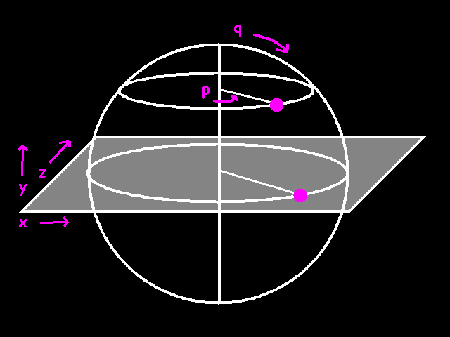
x = center + radius *
cos (p) * scale_factor
y = center + radius * sin
(q)
z = center + radius * sin (p) * scale_factor
The scale factor should be 0 when q is 90 or -90, and 1 when q is 0.
x = center +
radius * cos (p) * cos(q)
y = center + radius * sin
(q)
z = center + radius * sin (p) * cos(q)
Voilá
Now inverting these formulae:
sin (q) = ((center - y) / radius)
q = arcsin
((center - y) / radius)
that's the easiest one. Now we can calculate q, we can move on to p.
cos (p) = ((center - x) / (radius *
cos(q))
p = arccos ((center - x) / (radius * cos(q))
If we calculate q first, we can calculate p too with this formula. As you see, again we don't need to know z in order to calculate p and q.
So the plan is to:
Let's bring these formula's to practice in an example:
/*
mapped_sphere()
maps a bitmap onto a sphere and displays it.
BITMAP
*target = bitmap to display onto
int cx, cy = center of the
sphere
int r = radius of the
sphere
BITMAP *map = bitmap to
map onto the sphere
*/
void mapped_sphere (BITMAP
*target, int cx, int cy, int r, BITMAP *map)
{
int x, y; // coordinates on the
target bitmap
int p, q; //
coordinates on the source bitmap
// for
each line
for (y = -r; y < r;
y++)
{
fixed
temp_p, temp_q;
fixed
q_cos;
// y ranges
from -r to r now.
// for
asin() we need a number between -1 and 1.
// therefor
we need to divide by r
temp_q =
itofix (y) / r;
// now we
can apply the formula
temp_q =
fixasin
(temp_q);
// we
store the cosine of temp_q, because we will need it a couple
of times
// later
on
q_cos =
fixcos (temp_q) * r;
//we can
calculate q already
//temp_q is
an angle ranging from -64 to 64
//q must
range from 0 to map->h
//so we use
the following expression:
q = fixtoi
(temp_q + itofix (64)) * (map->h-1) / 128;
// instead
of making x go from -r to +r,
// we skip
the parts in the corners that lay outside the sphere
for (x = -
fixtoi (q_cos) + 1; x < fixtoi(q_cos) - 1; x++)
{
// at the very top of the sphere, q_cos can
reach 0
// this can create a "division by zero"
error
// so we need to check that first
if (q_cos != 0)
// if not zero, we can
go ahead and apply the formula
// to calculate p
temp_p = fixasin
(fixdiv (itofix (x), q_cos));
else
temp_p = 0;
//temp_p ranges from -64 to 64 now
//again, we change that so we only have
positive numbers
temp_p &= 0xFFFFFF;
// now we can finally calculate p
// we change a range from 0..64 - 192..255
to
// a range from 0..map->w
p = fixtoi (temp_p) * (map->w-1) / 256;
// we know p and q. copy a pixel.
putpixel (target, x + cx, y + cy,
getpixel (map, p,
q));
}
}
}
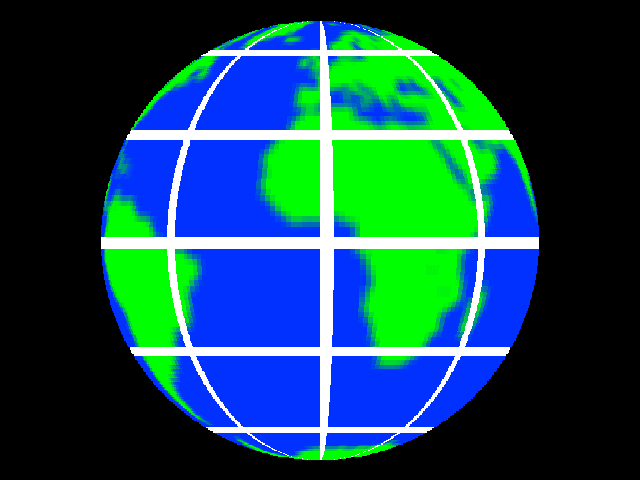
Looks nifty, huh? No? Ok we can do better. Let's make the thing rotate. Not just simply rotate around one axis as the earth does, that's too easy. No we want to have full 3- dimensional rotation, so we can view the earth from any possible camera position.
I explained 2-dimensional rotation in my previous article, remember? Now we are going to do exactly the same thing for three dimensions. If we rotate with a degrees around the z axis, we get:
new_x = x * cos (angle) - y
* sin (angle)
new_y = x * sin (angle) + y * cos
(angle)
new_z = z
well, that's just exactly the same as we did before. The formula's for rotating around the x and y axes is the almost the same, you'll get the idea. We don't really need them either, because allegro has all these things built in. Isn't that just great? You really gotta love allegro.
Ok so let's get over this again. We have a point (x, y, z) in space, and we want to rotate that around the z-axis with a degrees. The new x, y and z can be calculated with the formula I just gave you, but to do it the allegro way, we'll use this piece of code.
MATRIX m;
fixed a, x, y, z, new_x, new_y, new_z;
get_z_rotate_matrix (&m, a);
apply_matrix (&m, x, y, z,
&new_x, &new_y, &new_z);
There you have it. Exactly the same thing, but without having to remember any formula's. To rotate around three axes at the same time, we can do it this way:
get_rotation_matrix
(&m, a, b, c);
apply_matrix (&m, x, y, z, &new_x,
&new_y, &new_z);
Where a, b and c are the rotation angles around the x, y and z axis respectively.
As you see we really need the z coordinate this time. A sphere really is 3-dimensional and in order to rotate in 3 dimensions, we really need to know the coordinates in all 3 dimensions.
So first, how to calculate the z coordinate? Remember the magic property of circles that we used to draw one in the previous article? Each point on a circle has exactly the same distance to the center. We calculate distance with pythagoras theorem, so:
x^2 + y^2 = radius^2
The same goes for a sphere, but in three dimensions. Each point on a sphere has exactly the same distance to the center. We get:
x^2 + y^2 + z^2 = radius^2
Remember that we know x and y, because that are the coordinates on the destination bitmap. We also know the radius, so we can use this formula to calculate z.
z^2 = radius^2 - x^2 - y^2
z =
sqrt(radius^2 - x^2 - y^2)
So the plan is to:
Let's do some code.
/*
get_mapped_sphere_ex() is similar to
get_mapped_sphere(), but also takes
a rotation matrix as argument to
draw a rotated sphere.
BITMAP *target = bitmap to display
onto
int cx, cy = center of the
sphere
int r = radius of the
sphere
BITMAP *map = bitmap to
map onto the sphere
MATRIX
*rotmat = rotation matrix
*/
void mapped_sphere_ex
(BITMAP *target, int cx, int cy, int r, BITMAP *map,
MATRIX *rotmat)
{
int x, y; // coordinates on the
target bitmap
int p, q; //
coordinates on the source bitmap
for (y = -r; y < r; y++)
{
fixed q_cos
= fixcos (- fixasin (itofix (y) / r)) * r;
for (x = -
fixtoi (q_cos) + 1; x < fixtoi(q_cos) - 1; x++)
{
fixed newq_cos, temp_p, temp_q; // some
temporary variables
fixed newx, newy, newz; // x, y and z after
rotation
fixed z; // z before rotation. we don't have to
calculate x and y
// calculate z
// using pythagoras and the formula for a
sphere:
// x^2 + y^2 + z^2 = r^2
// we know x, y and r
z = fixsqrt (r * itofix (r) -
x * itofix (x) - y *
itofix (y));
// apply the rotation matrix to x, y, z.
// put the result in newx, newy, newz
apply_matrix (rotmat, itofix(x), itofix(y),
z,
&newx, &newy,
&newz);
//just as in sphere2.c, we need to check if
q_cos is 0
//however, q_cos depends on y, and we just
calculated a new y
//thus we have to calculate q_cos again.
newq_cos = fixcos (temp_q) * r;
if (newq_cos != 0)
{
// it is possible to
use temp_p
// temp_p = fixasin
(fixdiv (itofix (x), q_cos));
// however, I found I
get less rounding errors if I use
// fixatan2 instead.
The principle remains the same.
temp_p = fixatan2
(fixdiv (newx, newq_cos), fixdiv (newz,
newq_cos));
}
else
temp_p = 0;
temp_p &= 0xFFFFFF;
p = fixtoi (temp_p) * (map->w-1) / 256;
// calculate q
temp_q = fixasin (newy /
r);
q = fixtoi (temp_q + itofix (64)) * (map->h-1)
/ 128;
putpixel (target, x + cx, y + cy,
getpixel (map, p,
q)
);
}
}
}
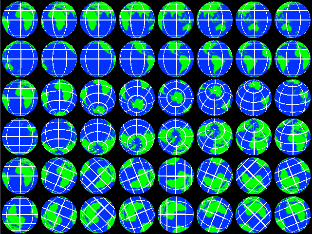
Note that in this example I use atan2 to calculate p. The reason is simply that this way there are less rounding errors. The implementations of fixasin and fixacos are less accurate as the parameter approaches 1 or -1.
When I was in Finland last year, it was pretty cold most of the time. In fact Finland is such a cold country that when the lakes finally melted in May, some people went on and on that it was so early in the year that the lakes melted and that the climate was definitely warming up. But that is besides the matter. The question is, why is Finland such a cold country?
Because it is way up in the north you say? Duh. What does that have to do with anything?
The real reason is that the sun is always so low above the horizon. That means that a certain amount of light from the sun falls on a much larger surface (see figure 8). That means that the energy of the sun is distributed over a larger area and therefore it is much colder.
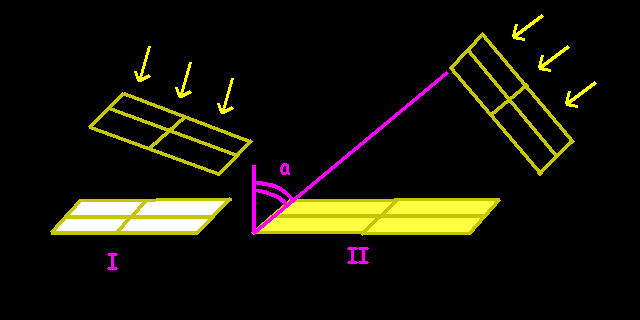
In other words, the amount of light on a surface is proportional to the cosine of the normal of the surface with the light source.
The higher the sun is, the more heat it brings to the surface of the earth. The higher the sun is, the less of the surface has to be heated with the same sunrays. As you can see from figure 8, the power of the sun is proportional to the surface that a certain amount of light falls on. We can calculate this using the surface using the cosine of the angle alpha of the rays of the sun with the normal of the surface of the earth.
light = cos (angle between surface normal and light)
(The normal is a vector that is perpendicular to the surface. Its an arrow that sits on the surface and points away to outer space)
We can use this formula to light our sphere. If we know the angle of the light and the normal on each point of the surface of the sphere, we can create a nice lighted sphere.
Imagine that there is a vector (=arrow) from the center of our sphere to the surface at a certain point. Let's call this point P. P has the coordinates x, y and z. Now think of the normal of the sphere at point P. It is another vector that points from the center of the surface to outer space. You see, both vectors point in the same direction. So the vector from the center to P is in principle the same as the normal at point P.
Now the direction of the light. We'll assume that we have some weird light source at infinite distance, so the light rays are parallel. This means we can simply use one vector for the light source for each point of the sphere.
Now we'll need to know the angle between these two vectors. I hear somebody whispering... What does he say? Listen, he says: "look in the first article." D'oh! In the first article it says you can use the cross product to calculate the angle between two vectors. The cross product for three dimensions is:
arccos (angle) = normal_x * light_x + normal_y *
light_y + normal_z * light_z
The arccosine and the cosine negate eachother so we just remove them and we get:
light = cos (angle)
arccos (angle) = normal_x * light_x + normal_y * light_y +
normal_z * light_z
light = normal_x * light_x +
normal_y * light_y + normal_z * light_z
and this is a number between -1 and 1. If it is negative, it means we are at the night-side of the sphere, so everything from 0 down should be totally dark.
Our new plan
Here is the code:
/*
lit_sphere() draws a plain, solid sphere with lighting.
BITMAP *target: bitmap to draw onto
int cx, cy:
center of the sphere
int r: radius of the sphere
fixed longitude, latitude: direction of the lightsource
*/
void lit_sphere (BITMAP *target, int cx, int cy, int
r, fixed longitude, fixed latitude)
{
int x, y;
// no p and q this time, because
there is no source bitmap
// calculate the light
vector
fixed lightx, lighty,
lightz;
lightx = fixmul (fixsin
(longitude), fixcos(latitude));
lighty = fixsin (latitude);
lightz = fixmul (fixcos (longitude),
fixcos(latitude));
for (y = -r; y < r; y++)
{
fixed q_cos
= fixcos (- fixasin (itofix (y) / r)) * r;
for (x = -
fixtoi (q_cos) + 1; x < fixtoi(q_cos) - 1; x++)
{
// -64 < angle_p < 64
fixed light; // light factor
int lighti; // idem, but int instead of
fixed
fixed xnormal = itofix (x);
fixed ynormal = itofix (y);
fixed znormal = fixsqrt (r * itofix (r) -
x * itofix (x) - y *
itofix (y));
light = dot_product (
// normal of sphere
surface
xnormal / r, ynormal /
r, znormal / r,
// light source
vector
lightx, lighty,
lightz
);
// if light is negative, we are in the shadow
region
// so it should be black
if (light < 0) light =
0;
lighti = fixtoi (light * 255);
putpixel (target, x + cx, y + cy,
makecol (lighti,
lighti, lighti));
}
}
}
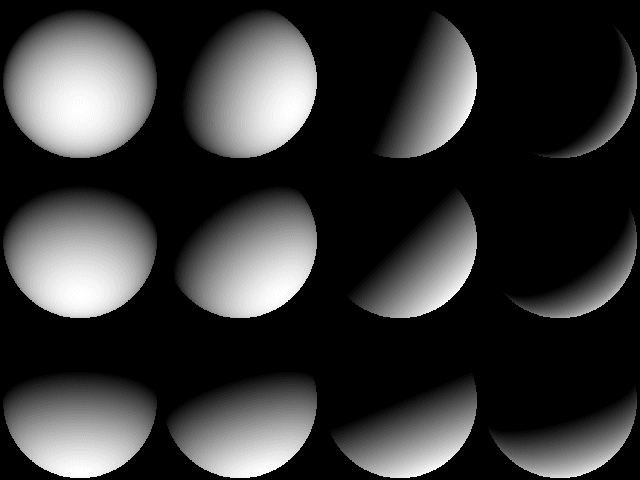
Let's do that again, but with a texture
/*
mapped_lit_sphere()
maps a bitmap onto a sphere and applies lighting at the same
time
This is essentially mapped_sphere_ex() and
lit_sphere() combined. Look at
those functions for
more comments.
BITMAP *target = the bitmap to
draw onto
int cx, cy = center of the sphere
int r
= radius of the sphere
BITMAP *map = bitmap to map onto
the sphere
MATRIX *rotmat = rotation of the sphere
fixed longitude, latitude = position of the light source, as
if it were right above
that
spot on the earth
*/
void mapped_lit_sphere
(BITMAP *target, int cx, int cy, int r, BITMAP *map,
MATRIX *rotmat, fixed longitude,
fixed latitude)
{
int x,
y; // coordinates on target bitmap
int p, q; // coordinates on source
bitmap
// calculate the light vector
fixed lightx, lighty,
lightz;
lightx = fixmul (fixsin (longitude),
fixcos(latitude));
lighty =
fixsin (latitude);
lightz =
fixmul (fixcos (longitude), fixcos(latitude));
for (y = -r; y < r; y++)
{
fixed q_cos
= fixcos (- fixasin (itofix (y) / r)) *
r;
for (x = -
fixtoi (q_cos) + 1; x < fixtoi(q_cos) - 1; x++)
{
fixed light;
int lighti, color;
fixed temp_p, temp_q;
fixed newx, newy, newz;
fixed z = ftofix (sqrt((double)(r * r - x * x -
y * y)));
// rotate x, y and
z
// put the result in newx, newy and newz
apply_matrix (rotmat, itofix(x), itofix(y),
z,
&newx, &newy,
&newz);
// see if we are near the poles
temp_q = - fixasin (newy /
r);
if (temp_q != 0)
{
// again, I chose to use
fixatan2 instead of
// temp_p = fixasin
(newx)
// so we'll have less
problems with rounding errors.
temp_p = fixatan2 (newx,
newz);
}
else
temp_p = 0;
temp_p &= 0xFFFFFF;
q = fixtoi (-temp_q + itofix (64)) * (map->h-1)
>> 7;
temp_q = fixcos (temp_q) * r + itofix (1);
p = fixtoi (temp_p) * (map->w-1) >> 8;
light = dot_product (
// normal of sphere
surface
itofix(x) / r,
itofix(y) / r, z / r,
// light source
vector
lightx, lighty,
lightz
);
if (light < 0) light = 0;
//lighti = fixtoi (light * 255);
lighti = fixtoi ((light << 8) - light);
color = getpixel (map, p, q);
putpixel (target, x + cx, y + cy, lit_color
(color, lighti));
}
}
}
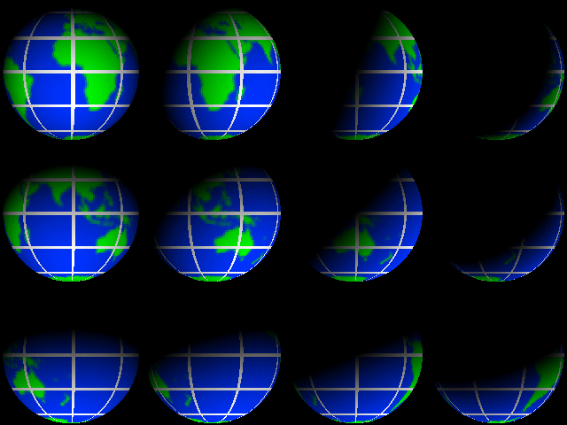
We are nearly at the end of this lesson now. The last example was pretty slow. For the sake of keeping things simple, I didn't apply any optimizations to any of the examples. I managed to optimize the last example so that I can display a lit sphere with a radius of 220 in 32 bit mode at 300 fps on my Ahtlon 1800+. How I did that? I'll deal with that in the next article.
Here is another example of what you can do with the stuff that is explained in this article.
Last year, when I was in Finland... (No, not again!) The funny thing about the place is that it never gets dark at night in the summer. You can simply sit outside until early in the morning and drink beer and grill sausages and swim in the lake and it simply doesn't grow dark at all.
This effect occurs because the rotational axis of the earth is tilted, and in the months June and July the northern hemisphere receives more light from the sun than on average. It would be interesting to make a computer simulation of the earth and to see where on earth it is light and dark at a certain time.
The next example draws a map of the earth in cylindrical projection (cylindrical in the cartography sense). However it calculates for each point on the map where on a sphere it would be and what amount of light it would receive. The effect is a night and day map of the earth.
/*
lit_projection () draws a bitmap
onto another bitmap, but lights each
individual pixel as if it was on a
sphere with a light shining on it from
one direction.
BITMAP *target -> the bitmap to draw onto
BITMAP *map -> the bitmap to
draw
fixed longitude, latitude
-> the position of the lightsource.
*/
void lit_projection (BITMAP
*target, BITMAP *map,
fixed
longitude, fixed latitude)
{
int x, y; // coordinates on target
bitmap
int p, q; // coordinates
on source bitmap
fixed p_angle,
q_angle; // the same, but scaled to a 256 degree circle
// the range of p is 0..bmp->w, but
the range of p_angle is always 0..255
//
calculate the light vector
fixed lightx, lighty,
lightz;
lightx = fixmul (fixsin (longitude),
fixcos(latitude));
lighty =
fixsin (latitude);
lightz =
fixmul (fixcos (longitude), fixcos(latitude));
for (y
= 0; y < target->h; y++)
{
int q = y *
map->h / target->h;
p_angle =
((itofix(y) / target->h) * 128) - itofix (64);
for (x = 0;
x < target->w; x++)
{
int p = x * map->w / target->w;
fixed light;
int color, lighti;
q_angle = (itofix (x) / target->w * 256);
light = dot_product (
// normal of sphere
surface
fixmul (fixsin
(p_angle), fixcos (p_angle)),
fixsin (p_angle),
fixmul (fixcos
(q_angle), fixcos (p_angle)),
// light source
vector
lightx, lighty,
lightz
);
if (light < 0) light = 0;
lighti = fixtoi (light * 255);
color = getpixel (map, p, q);
putpixel (target, x, y, lit_color (color,
lighti));
}
}
}
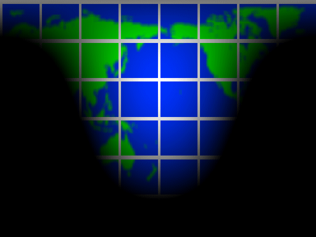
The earth is not flat. It is round.... like a pancake! - H. Finkers